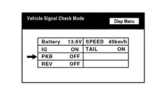
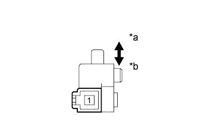

СИСТЕМА НАВИГАЦИИ (для моделей с жестким диском) > Цепь выключателя стояночного тормоза |
| 1.ПРОВЕРЬТЕ ВЫКЛЮЧАТЕЛЬ СТОЯНОЧНОГО ТОРМОЗА (РЕЖИМ ПРОВЕРКИ ДИСПЛЕЯ) |
|  |
Войдите в режим "Display Check" (проверка дисплея) и выберите пункт "Vehicle Signal Check" (проверка сигналов автомобиля) (Нажмите здесь).
Убедитесь, что дисплей включается и выключается в зависимости от работы стояночного тормоза.
| Состояние стояночного тормоза | Дисплей |
| Задействован | ON (ВКЛ) |
| Отпущена | OFF (ВЫКЛ) |
|
| ||||
| OK | ||
| ||
| 2.ПРОВЕРЬТЕ ЖГУТ ПРОВОДОВ И РАЗЪЕМ (ДИСПЛЕЙ МОДУЛЯ СИСТЕМЫ НАВИГАЦИИ И ИНДИКАЦИИ - ВЫКЛЮЧАТЕЛЬ СТОЯНОЧНОГО ТОРМОЗА) |
Отсоедините разъем H4 дисплея модуля системы навигации и индикации.
Отсоедините разъем G77 выключателя стояночного тормоза.
Измерьте сопротивление в соответствии со значениями, приведенными в таблице ниже.
| Контакты для подключения диагностического прибора | Условие | Заданные условия |
| H4-17 (PKB) - G77-1 | Всегда | Менее 1 Ом |
| H4-17 (PKB) - масса | Всегда | 10 кОм или более |
|
| ||||
| OK | |
| 3.ПРОВЕРЬТЕ ВЫКЛЮЧАТЕЛЬ СТОЯНОЧНОГО ТОРМОЗА В СБОРЕ |
|  |
Снимите выключатель стояночного тормоза в сборе (Нажмите здесь).
Измерьте сопротивление в соответствии со значениями, приведенными в таблице ниже.
| Контакты для подключения диагностического прибора | Положение переключателя | Заданные условия |
| 1 - масса | Выключатель стояночного тормоза включен (штырь выключателя отпущен) | Менее 1 Ом |
| Выключатель стояночного тормоза выключен (штырь переключателя нажат) | 10 кОм или более |
| *a | Отпущена |
| *b | Нажат |
|
| ||||
| OK | ||
| ||